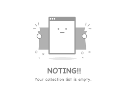

<h2>TODO list</h2>
<app-add-task></app-add-task>
<app-search-task (searchItem)="handler($event)"></app-search-task>
<ul>
  <li class="todo-elem"
      [ngClass]="{hide : item.content.toLowerCase().indexOf(styleHide) === -1}"
      *ngFor="let item of items | async; let i = index">
    <app-task-elem
      [model]="item"
      [index]="i"
    ></app-task-elem>
  </li>
</ul>
<div *ngIf="!(items | async).length" class="listEmpty">
  
</div>
